Independent character review · October 3, 2026 · Source and genuine native captures
C1 passes the native character review
The captured Grove poses preserve C1's fuller short legs, filled chest, quiet walk and original face. Native walking with a ball reads clearly in both directions. The ordinary idle samples show the forepaw cuddle, the ball passing above the ears and its return to the back. No further character-art correction or capture is requested.
Native observations
I reviewed the stored 160 by 144 framebuffer images against the original front and side photographs. Kittie's head remains close to his paws, and his low body does not hang over an empty chest notch. The angled feet remain short and attached on both soil and olive limbs. The pale accents read as small highlights on taupe paws. The pink wool ball remains a separate object.
The carried walking sequences show restrained changes at the feet in both directions, with a steady upper silhouette. The upper-canopy jump samples keep the face, ball and live score readable. The clear sequence shows a deliberate movement from back carry into the forepaws. In ordinary play, the later critic samples show that this is a complete repeating cuddle, with the ball above the ears on its return. The embroidered eyes and grin stay fixed throughout those captured poses.
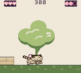
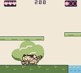
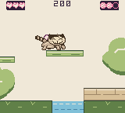
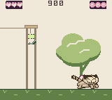
These GIFs contain genuine stored framebuffer samples, without invented intermediate frames. The walking and clear samples use their recorded frame spacing. The ordinary-idle sequence has 55-frame gaps, so it confirms the poses and return path without proving every intervening frame.
Native frame contact sheets
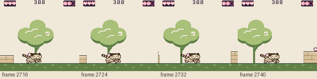
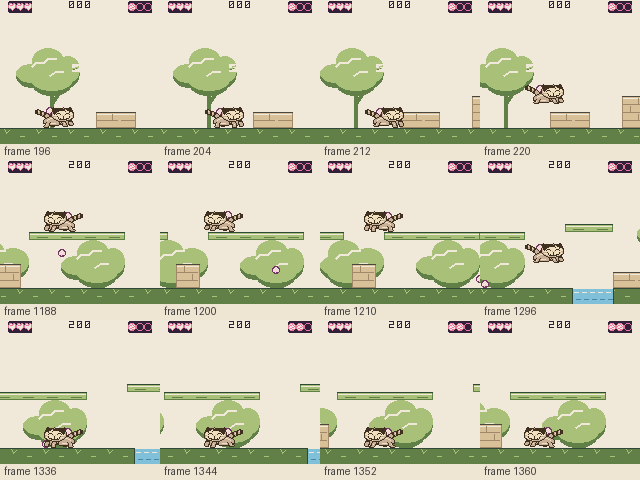
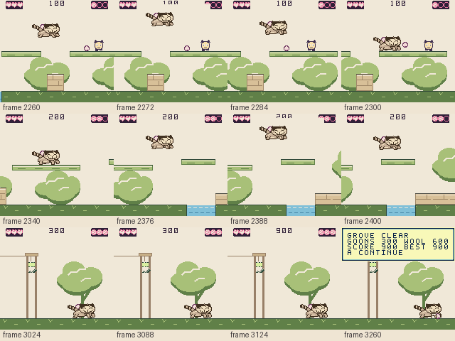
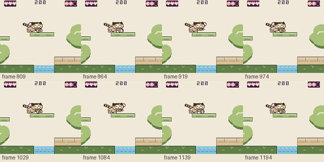
The photographs and the selected stance agree
I inspected the original current front and side photographs in the owner's Kittie reference folder. His broad face rests close to the forepaws, and the torso stays low behind it. C1 keeps that relationship. The taupe chest connects the two forelegs beneath the cheek, while their small separated tips describe the stance. The wider legs have enough fill to look soft; the pale highlights remain small.


The integrated rest frame matches the approved C1 study pixel for pixel. The original ears remain. The crown, low oval face, closed embroidered eyes, pale nose and wide stitched grin are fixed across all sixteen frames. The broader legs do not take attention away from the face at 40 by 32 pixels.
The whole pose sequence holds together
Walking changes the toe ends and small lifts beneath steady attachments. The four walk frames change only rows 27 through 31 relative to rest; the head, chest and tail stay settled. That is the right amount of movement for this plush body. The outward angle survives the steps without becoming a long bent shoe or a pair of thin sticks.
The throw reaches forward with a taupe paw, and the air pose keeps the body compact. The cuddle still uses its approved forepaw shapes and ball space. Those four forepaw crops are unchanged. The native evidence above confirms that the pink wool ball uses this space and returns above the head to the back.
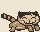
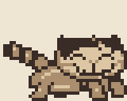
These are source previews, not emulator footage. I inspected the individual cels and source timing definitions. Their walking cels last 120 ms. The engine selects one walk cel per eight gameplay updates. Chrome's URL policy blocked the local-file preview, so browser playback was not verified. The full contact sheet below also includes the cuddle and reaction poses that the preview loop omits.
Enlarged pose sheet
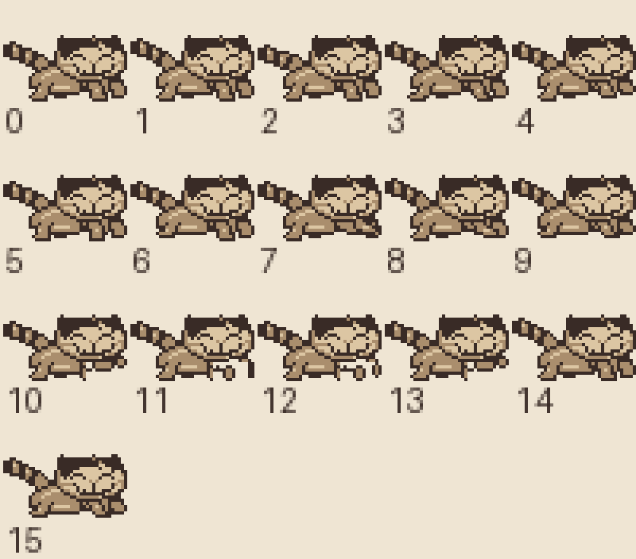
Limits of this acceptance
The meaningful C1 poses are covered. This review does not certify every frame, the complete game's performance or the new service-lift scenes. The verifier still needs to check the combined lift, patrol, carried ball and HUD object budget in those scenes. Physical Chromatic appearance remains with the owner. Neither limit is a reason to revise the character without an observed problem.
The source sheet and imported sprite asset agree. Source metadata reports 41 unique 8 by 16 tile pairs and five Kittie objects per scanline. Those counts do not prove that the complete scene meets its display budget.
Compact HUD follow-up
The four-object HUD passes this visual check at 160 by 144. In the supplied Villa high-jump frame I can read score 000, three hearts and one ball. The symbols are small, but the heart's pointed base and the ball's rounded outline remain distinct beside their counts. The score has clear spacing and stays readable above Kittie. In the earlier frame the score disappeared. I would keep this version without another pixel change.
The builder reports that this change reduces the same high-jump scene from fifteen objects on a top scanline to ten, with none over the hardware limit. This review confirms the supplied image's readability, not a new runtime or object-count test. It requires no change to Kittie, his jump or the play area.


Evidence and scope
The original front and side photo hashes match the project's reference manifest. An exact comparison found zero differences between the integrated rest frame and selected C1. All 284 protected face and ear cells match the approved pilot in every frame. The approved cuddle forepaw crops also match. These checks support the visual judgment above.
Reviewed source SHA-2569992688257d25a39382735c9df76cb615833acce9786e61c165ddd430147aca3
Evidence manifest · Selected C1 study · Current generator · Original reference paths and hashes

Builder capture ROM SHA-256f699f3f5baf8ad56e5632f4fa0ab06fa639e0a74346847c632c7308bbe0bb3c3
Frozen builder recording metadata · Native sample inventory and timings · Independent critic's ordinary cuddle samples
This pass wrote the review and copied or arranged existing evidence under design. It did not change game assets, source code, builds or emulator state. Runtime ownership stayed with the builder and independent gameplay critic.